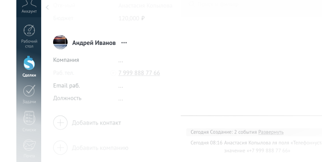

Отлично поладим с вашей CRM
Готовые интеграции Сипуни с amoCRM и Битрикс24. Управитесь с
настройкой за 20 минут

Распределим звонки по менеджерам
Задайте сценарии. Когда вам позвонят, мы сверимся с вашим сценарием и данными из amoCRM. Звонок попадет к нужному менеджеру.
Переведем звонок на ответственного
Если уже есть сделка, мы проверяем ответственного и переводим звонок на него. Даже если клиент звонит на единый номер.
Сохраним запись звонков в amoCRM
Если сменится ответственный, он сможет прямо в сделке прослушать записи звонков и узнать, что было в предыдущих сериях.
Создадим по звонку контакт/сделку
Если звонит новый контакт, создадим сделку и направим звонок согласно вашим настройкам. Тот, кто ответит, станет ответственным.
Примем меры, если клиент не дозвонился
По умолчанию оставим запись о пропущенном и поставим задачу на перезвон. Если контакта нет в CRM — еще и сделку создадим.
Распределим и сохраним звонки
В Сипуни ооочень гибкие настройки распределения звонков. Как вам
удобно, так и будет

Если клиенты звонят в нерабочее время
Программа минимум: проиграем от вас аудиосообщение. Если
есть интеграция с CRM, поставим менеджеру задачу на перезвон

Если у вас единый номер и клиенты из разных регионов
Переведем звонок на менеджера из региона клиента. Он
не назовет парадную подъездом лучше знает
специфику местного рынка

Если звонят менеджеру, который сейчас занят
Поможем распределить нагрузку по отделу. Если занят один
менеджер, направим звонок другому автоматически

Если все отделы разговаривают с единого номера
В Сипуни можно собрать голосовое меню. Клиент сам выберет по
какому вопросу хочет с вами пообщаться

Виртуальная АТС, телефония, IP-телефония, ВАТС — это одно и то же. Что бы вы ни искали, Сипуни подходит
Сохраняем все звонки и в Сипуни, и в CRM. Если в работе CRM сбой, звонки все равно сохранятся
В Сипуни работать со звонками — удобно
Звоните прямо из amoCRM. Принимайте звонки через виджет в amoCRM или приложение Сипуни для компьютера
Кнопка, чтобы звонить прямо из amoCRM
Клик на номер в карточке контакта или сделки — и всё, звонок пошел
